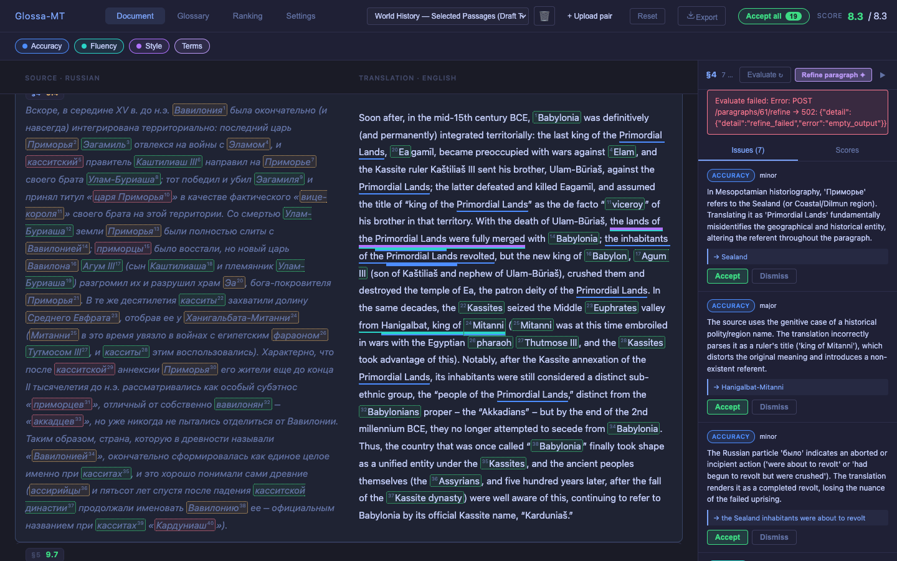
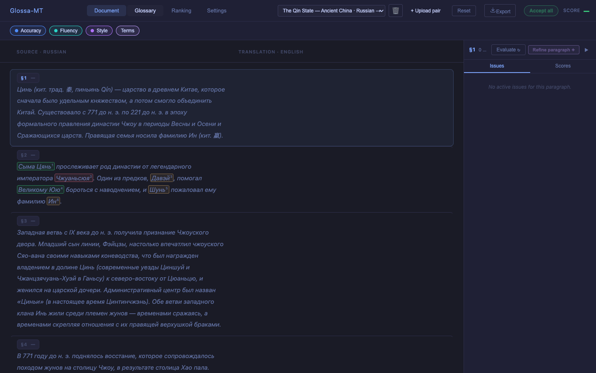
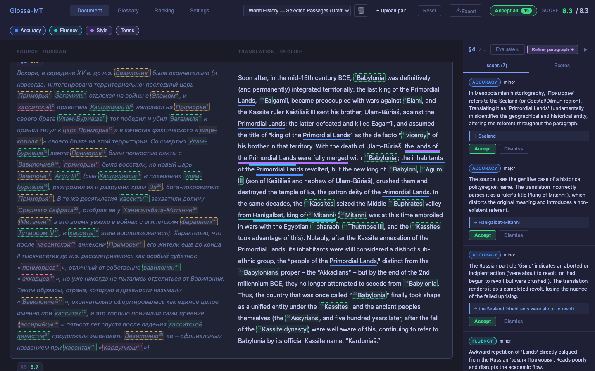
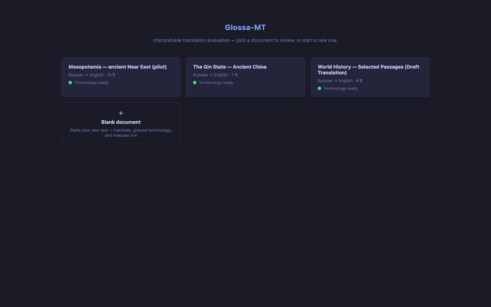
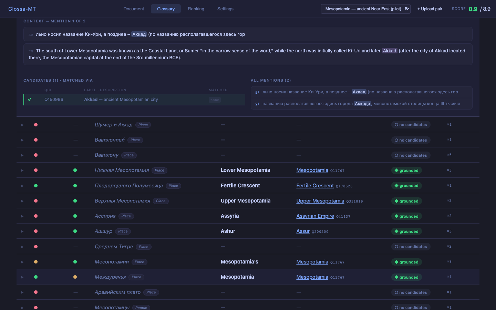
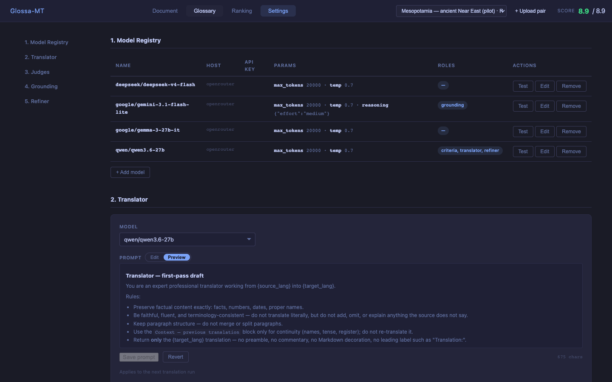

codex-ревью запустить не удалось: codex залогинен через ChatGPT, но refresh-токен отозван (refresh_token_invalidated) — нужен твой codex login. Вместо него подняли независимого Opus-адверсария по data-integrity, чтобы вторая перспектива не пропала.
| Sev | Находка | Корень | Статус |
|---|---|---|---|
| CRIT | Money-shot Refine мёртв — 502 empty_output, воспр. 2× (§4 55с, §1) | qwen3.6-27b как рефайнер — thinking-модель; reasoning не аддитивный, съедает бюджет 2048 → пустой content. При 20000 — таймаут 120с | FIXED рефайнер→gemini, 2.6с, «Sealand» ✓ |
| CRIT | doc 8 «Qin State» разбит — 6/7 абзацев target:"", 0 терминов за зелёным «ready» | фоновая задача перевода/терминологии не пережила рестарт контейнера (orphan) | FIXED пересобран (id 13): 7/7 перевод, 64 терма, пара Цинь/Цзинь ✓ |
| CRIT | Миграция сбивает модель — grounding/судьи/рефайнер откатывались на qwen при каждом старте | migrate.py:230 предикат model_name != DEFAULT ловил и валидный gemini | FIXED guard NOT IN (MATRIX); durability подтв. редеплоем |
| HIGH | Кнопки Refine/Evaluate без синхронного гварда → тройной клик = 2-6 платных вызовов | disabled={isLoading} обновляется только на следующем рендере | FIXED inFlight-ref (VariantA.tsx) + 2 теста |
| HIGH | Тест-инцидент: e2e случайно снял (dismiss) issue-1 на doc 1 | скрытая, но смонтированная кнопка Dismiss в DOM под невидимой вкладкой | REVERTED issue-1 снова open |
| CRIT/ℹ | delete-document каскадит в score/issue | ON DELETE CASCADE; backend-ревью — нарушение инварианта, Opus — санкц. wave-4 исключение (только non-seed, не тронуто PR) | NOTED Reset при этом архивирует, не удаляет |
| Sev | Находка | Почему безопасно отложить |
|---|---|---|
| HIGH | Non-retryable ошибка Wikidata (4xx≠429) роняет все термины абзаца, а не красит один | узкий путь; внешний catch не даёт упасть документу; на живом прогоне не воспроизвёлся |
| HIGH | Док застревает в terms_status='running' навсегда после рестарта в середине пайплайна | migrate-фикс закрыл соседний класс; startup-sweep — в PR-3. Обходка: пересоздать док |
| MED | Clone-cache: eligibility без проверки score; whitespace-нормализация сдвигает offset терминов | для файлов Андрея источник (doc 10) со scores → клон корректный; узкие края |
| MED | NER timeout race (20с vs 30с SDK) → двойная стоимость; grounding-leg без потолка | стоимость/латентность, не корректность; на демо-объёме не бьёт |
| MED | Glossary: красная точка difficulty при «grounded» QID (косметика, рецидив 3-й раз) | визуальное противоречие на 1-м термине — при показе цветовой кодировки лучше начать не с него |
| MED | Reset-диалог: «live scores will be lost» — пугающая формулировка | поведение безопасно (архивирует), проблема только в тексте копи |
qwen как рефайнер оказался технически непригоден (2 попытки: подъём токенов → таймаут, enable_thinking:false → снова пусто — флаг не долетает до провайдера через OpenRouter). По твоему решению весь пайплайн переведён на gemini для скорости и надёжности живой записи:
Важно для статьи: судьи теперь gemini, а не qwen — оценки, показанные в кадре, приходят от gemini. Офлайн-числа статьи это не затрагивает. Строка сценария «qwen — default · all roles» (сцена Settings 2:05-2:30) устарела — покажется gemini; поправить озвучку.
37977d2





Полный e2e-отчёт: docs/reports/e2e/prod-emnlp-verify-2026-07-15.md (39 скринов). Backend-ревью: docs/reports/backend-developer-gemini-everywhere-migration-durability.md.
| Проверка | Состояние |
|---|---|
| Пикер | ровно 3 документа (Mesopotamia · Selected Passages · Qin State) + Blank, все terms=done |
| Money-shot doc 10 §4 | чистый драфт «Primordial Lands», 7 открытых issues → Refine ~3с даёт «Sealand» |
| doc 1 §1 issue-1 | open (тест-инцидент откачен) |
| doc 13 Qin | 7/7 переведено, 64 терма, пара Цинь/Цзинь |
| Роли моделей | gemini-3.1-flash-lite везде, durable через рестарты |
| Файлы Андрея (контент-кэш) | источник doc 10 со scores → клон корректный (проверено ранее 238мс) |
codex login — если нужна вторая независимая перспектива, дай знать, перезапущу.terms_status, clone-cache края, glossary red-dot, reset-диалог копи. Ни один — не блокер записи.37977d2) сейчас в ветке feat/emnlp-demo-sprint и уже на проде. Могу оформить его в PR к dev-demo, когда скажешь.